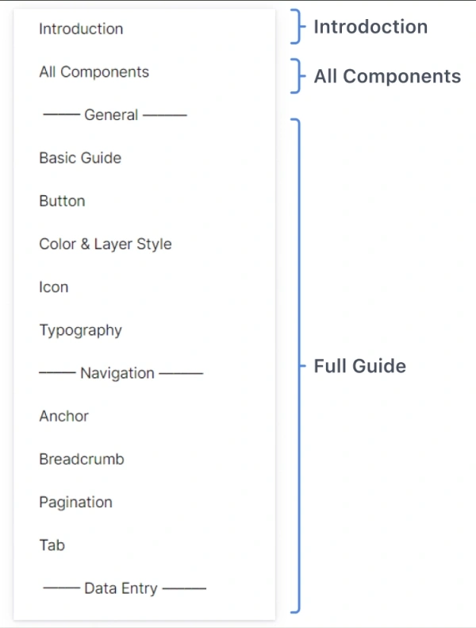
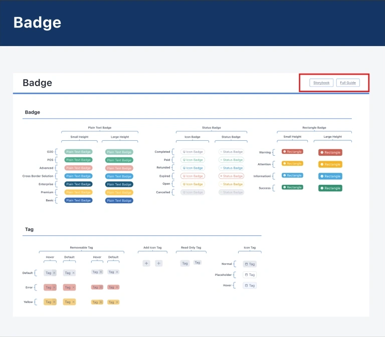
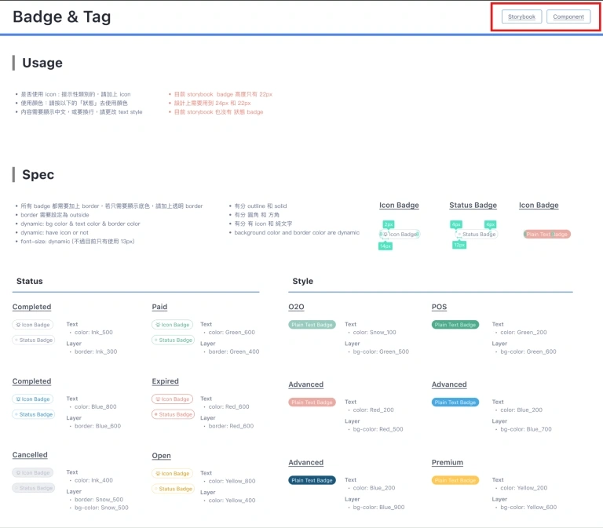
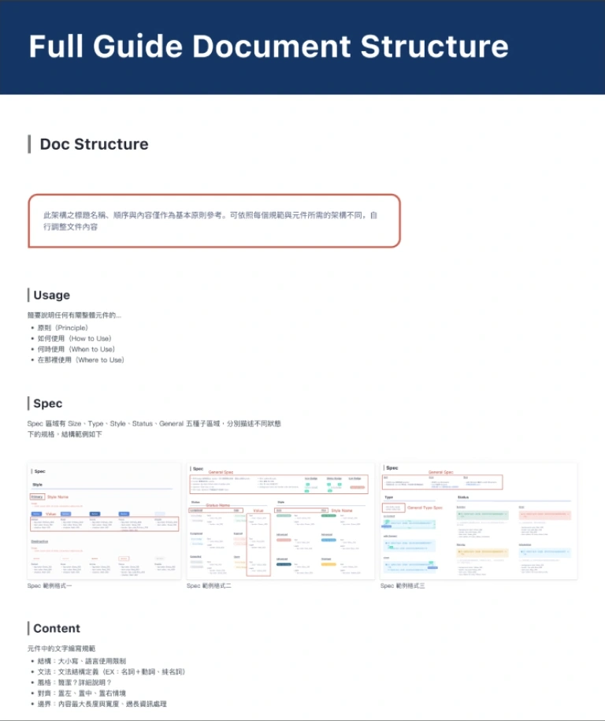
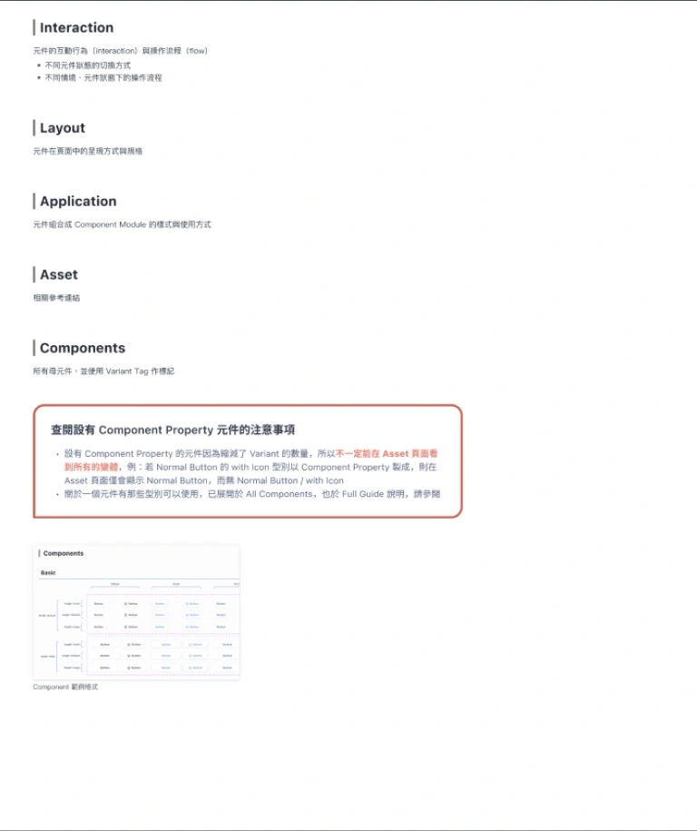

Solution
Restructure Documentation
To maintain quality and align with designers' habits, components are organized using the following structure in Figma:

Introduction
Provides a clear user manual outlining the design system's document architecture, along with instruction for creating, maintaining, and updating components.
All Components
Lists all components in the design system so designers can easily browse, reference and duplicate.
Full Guide
Shows the detail guideline for each component, including UI specification and usage scenarios.
Separate Parent and Subcomponents to Ensure Maintainability, Link Components and Guidelines for Cross-Reference
All subcomponents are stored on one page, allowing users to easily find and use the components. The use of subcomponents also helps preserve the integrity of the overall design system.
Links to the storybook and full guide are provided in the top right corner of each subcomponent section, allowing users to access the current component status and usage guideline.


Define a Unified Writing Style and Format
Create a checklist that standardizes components under the following seven fixed headings: Usage, Spec, Content, Layout, Application, Asset, and Components.


Create a Report Form for Real-Time Component Status Updates
Record component issues and assign an owner. Review all pending issues during the weekly meeting and discuss potential solutions.